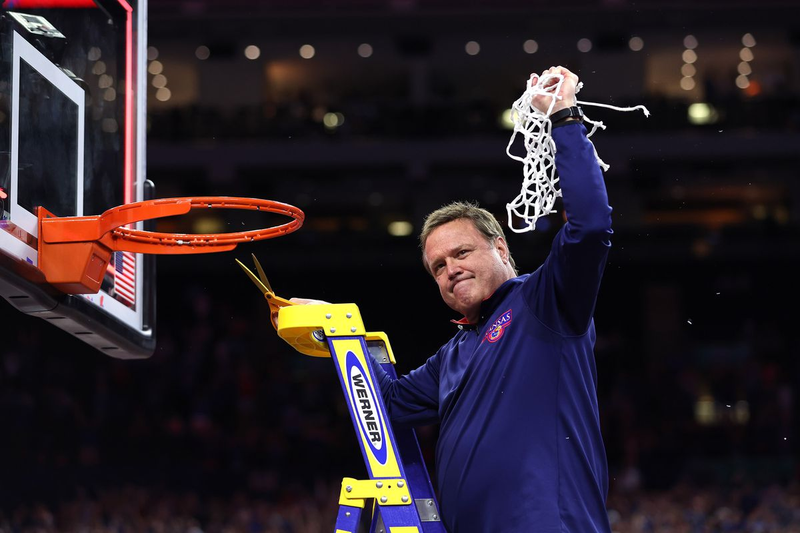

This is a profile page about Bill Self.
Billy Eugene Self Jr is an American basketball coach. He is the head men's basketball coach at the University of Kansas, a position he has held since 2003.
During his 19 seasons as head coach, he has led the Jayhawks to 16 Big 12 regular season championships, including an NCAA record 14 consecutive Big 12 regular season championships, some of which were shared (2005–2018).
He has also led the Jayhawks to four NCAA Final Four appearances (2008, 2012, 2018, 2022), the 2008 NCAA championship and 2022 NCAA championship.